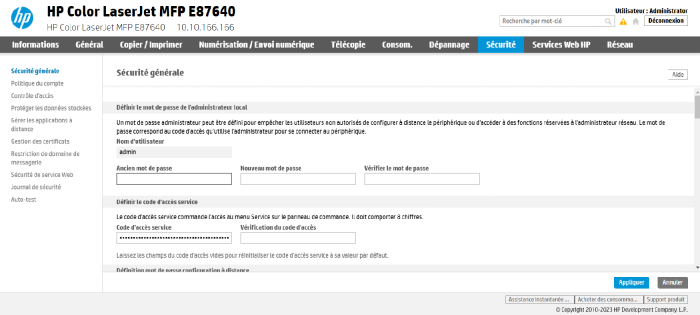
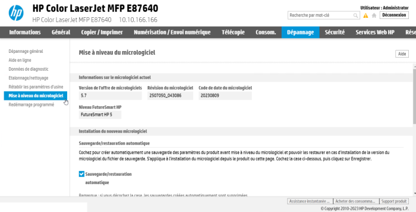
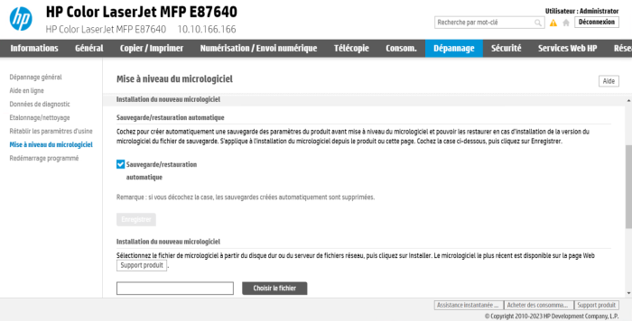
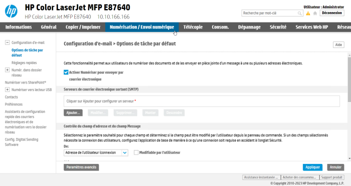
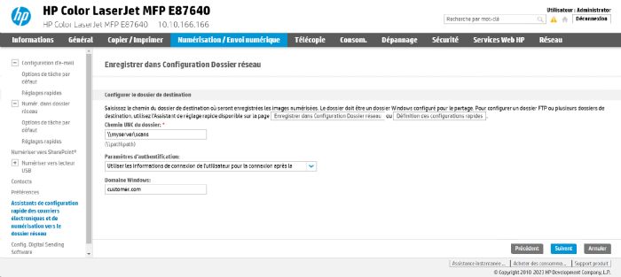

Hewlett Packard - Prérequis et configuration préalable
Configurer les ports
Les ports réseau à ouvrir pour permettre le fonctionnement sont les suivants :
| Source | Port | Protocole | Cible |
| Service Watchdoc pour l'authentification, port sécurisé obligatoire |
TCP 57627 TCP 7627 |
HTTP HTTPS |
Périphérique d'impression |
Configurer les périphériques
La configuration du WES Hewlett-Packard doit être précédée d'une configuration sur le périphérique depuis l'interface web d'administration de ce dernier.
Mot de passe administrateur
Par défaut, aucun paramètre de sécurité n'est défini sur les périphériques. Pour activer les paramètres de sécurité :
-
accédez au site web d'administration du périphérique à l'aide d'un navigateur ;
-
cliquez sur l'onglet Sécurité ;
-
dans l'interface Sécurité générale, saisissez un mot de passe pour l'utilisateur admin (ou redéfinissez le mot de passe s'il existe déjà) :

Future Smart Level
Pour fonctionner, le WES v3 nécessite au minimum le niveau FutureSmart 4.
Pour vérifier le champ FutureSmart level dans l'interface d'administration :
-
ouvrez le site web d'administration du périphérique à l'aide d'un navigateur ;
-
depuis l'interface d'administration, rendez-vous dans l'onglet Général ou Dépannage ;
-
dans le menu de gauche, cliquez sur Mise à jour du micrologiciel ;
-
dans la section Informations sur le micrologiciel actuel, vérifiez le niveau FutureSmart HP :

-
si le niveau n'est pas à 4 minimum, passez dans la section Installation du nouveau micrologiciel ;
-
rendez-vous dans la page WEB Support produit pour y sélectionner une version supérieure du micrologiciel ;
Vérifiez la date du firmware : le firmware doit dater, au minimum, de mars 2014 ; -
téléchargez le micrologiciel dans votre espace de travail ;
-
revenez dans l'interface d'administration de votre périphérique et cliquez sur Choisir le fichier :

-
parcourez votre espace de télétravail pour télécharger la nouvelle version du micrologiciel ;
-
une fois le micrologiciel installé, redémarrez votre périphérique d'impression pour finaliser l'installation.
-
le périphérique redémarre et la mise à jour débute.
Scan to mail - Numériser et envoyer par mail
Cette fonction permet à l'utilisateur de numériser un document pour l'envoyer vers une adresse e-mail.
Si vous souhaitez utiliser cette fonction du périphérique :
-
dans l'interface web d'administration du périphérique, sous l'onglet Numérisation > Envoi numérique, cochez la case Activer Numériser pour envoyer par courrier électronique ;
-
cliquez ensuite sur Options de tâches par défaut ;
-
dans l'interface Options de tâche par défaut, cochez la case Activer Numériser vers le dossier réseau ;
-
complétez les paramètres
-
Serveur SMTP : indiquez l'adresse du serveur SMTP utilisé ;
-
De : sélectionnez Adresse de l'utilisateur (connexion requise) et décochez la case Modifiable par l'utilisateur ;
-
-
puis cliquez sur Appliquer pour tenir compte du paramétrage :

Scan To Folder - Numériser vers un dossier personnel
Cette fonction permet à l'utilisateur de numériser un document pour l'envoyer vers un dossier réseau qui lui est personnel.
Elle nécessite d'avoir paramétré un compte de service disposant d'un droit en écriture sur les sous-dossiers réseau des utilisateurs.
Si vous souhaitez utiliser cette fonction du périphérique :
-
dans l'interface web d'administration du périphérique, sous l'onglet Numérisation > Envoi numérique, cliquez sur l'entrée de menu Numér. dans dossier réseau ;
-
dans l'interface Options de tâche par défaut, cochez la case Activer Numériser vers le dossier réseau ;
-
complétez les Paramètres de dossier en fonction de la manière dont vous avez configuré les dossiers réseau dédiés à cette fonction.
-
puis cliquez sur Appliquer pour tenir compte du paramétrage :
